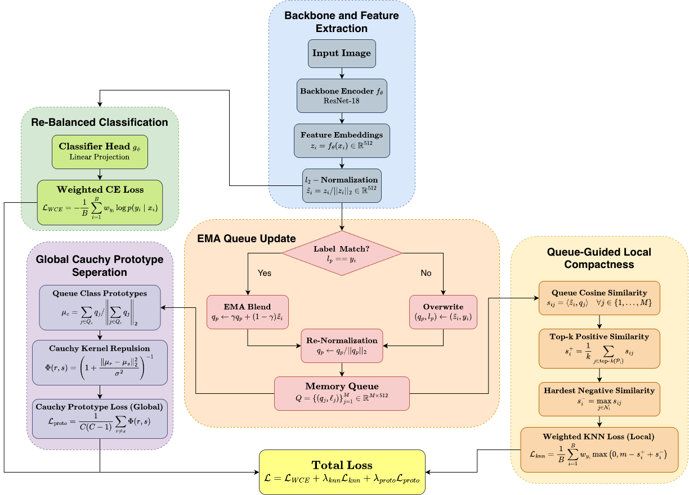
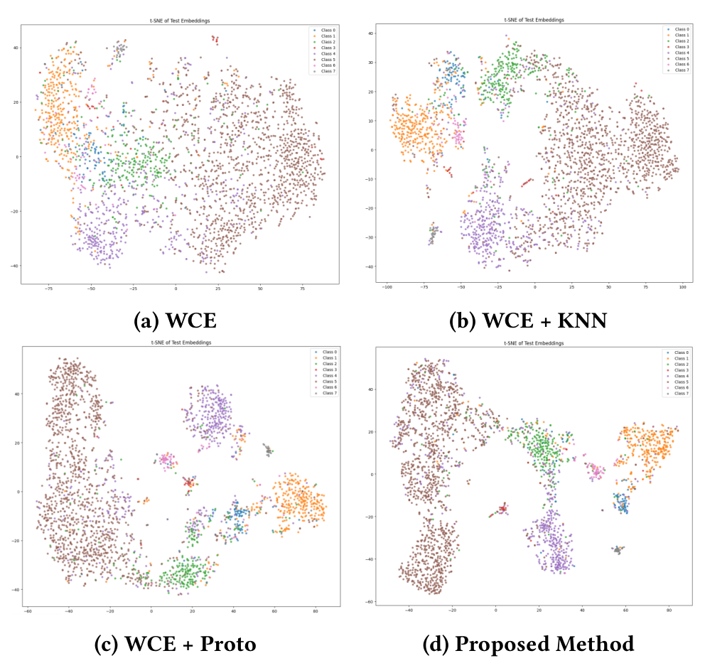
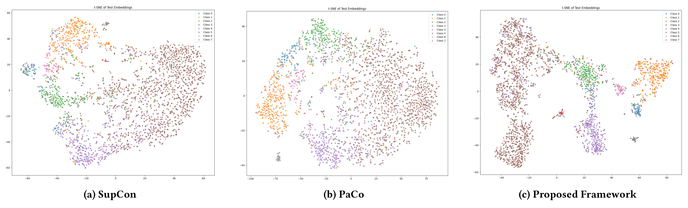

Class imbalance in skin lesion classification severely skews the learned embedding space, leaving minority-class representations sparse, dispersed, and easily confused with majority clusters. We address this with a memory queue-guided dual-scale metric learning framework evaluated on the ISIC 2018 and ISIC 2019 benchmarks. Our approach pairs a Weighted K-Nearest Neighbours loss for local neighbourhood compactness with a heavy-tailed Cauchy Prototype loss for global class separation, both computed over a dynamically maintained Exponential Moving Average (EMA) memory queue that gives minority classes a persistent, stable similarity pool despite mini-batch sampling sparsity.
The method achieves 87.41% ± 2.03% overall accuracy and 79.32% ± 1.87% balanced accuracy on ISIC 2018, and 82.78% ± 1.97% overall accuracy and 71.97% ± 1.93% balanced accuracy on ISIC 2019, outperforming PaCo and other loss-function baselines on balanced accuracy and most evaluation and embedding metrics. Quantitative representation analysis confirms these gains reflect genuine geometric restructuring rather than reweighting alone, yielding higher KNN purity, wider class margins, and stronger global separation.
Decouples representation statistics from mini-batch size constraints. Smoothly updates class representations ($\gamma = 0.99$) so rare categories maintain a stable similarity bank throughout training.
Pulls anchors toward their top-$k$ nearest positive historical neighbors in the queue while enforcing an angular margin $m=0.20$ against the hardest inter-class negative.
Repels class prototypes across the unit hypersphere via a heavy-tailed Cauchy potential ($\sigma=0.50$), maintaining sustained repulsive gradient pressure late into training.
Combines effective-number class weighting ($\beta = 0.999$) with smooth warm-up scheduling ($\tau=15$) to prevent geometric supervision from distorting early representations.
Given training data $\mathcal{D} = \{(x_i, y_i)\}_{i=1}^N$, an encoder $f_\theta$ produces a feature embedding $z_i = f_\theta(x_i)$, which is $\ell_2$-normalised to map it onto the unit hypersphere:
The complete multi-objective optimization function optimizes:

Figure 1: Workflow of the proposed model. The pretrained ResNet-18 encoder maps dermoscopic images onto the unit hypersphere. An EMA memory queue ($M=4096$) maintains cross-batch representations. The network is supervised by effective-number weighted cross-entropy ($\mathcal{L}_{\text{WCE}}$), local weighted KNN loss ($\mathcal{L}_{\text{knn}}$), and global Cauchy prototype separation loss ($\mathcal{L}_{\text{proto}}$).
To reduce class frequency bias without introducing severe gradient spikes, we apply effective-number weighting rather than naive inverse-frequency weighting. For class $c$ with $n_c$ training samples and $\beta \in [0, 1)$ controlling sample redundancy ($\beta = 0.999$):
We dynamically maintain an Exponential Moving Average (EMA) memory queue $\mathcal{Q} = \{(q_j, \ell_j)\}_{j=1}^M$ of $\ell_2$-normalised 512-dimensional embeddings ($M = 4096$). On each forward pass, given an anchor embedding $\tilde{z}_i$ with label $y_i$, the slot at pointer $p$ is updated:
Here $\gamma = 0.99$ denotes the momentum coefficient. This smoothly blends historical representations for matching classes, preventing stale entries while preserving intra-class diversity.
Similarities between anchor $\tilde{z}_i$ and queue entries are computed via dot product: $s_{ij} = \langle\tilde{z}_i, q_j\rangle$. Let $\mathcal{P}_i = \{j : \ell_j = y_i\}$ and $\mathcal{N}_i = \{j : \ell_j \neq y_i\}$. The positive similarity $s_i^+$ is averaged over the top-$k$ nearest neighbors ($k=10$), while $s_i^-$ targets the hardest inter-class negative:
Here $m = 0.20$ defines the angular margin. Class-balanced weighting ensures margin violations for rare classes contribute proportionally higher gradient signal.
To prevent aggregate centroids of different classes from drifting close together, we form class prototypes as joint batch–queue centroids. For class $c$, let $\mathcal{B}_c$ be the batch samples and $\mathcal{Q}_c$ be the queue entries:
Queue entries are detached ($\operatorname{sg}(\cdot)$), but active batch instances retain full autograd connections to the encoder:
Pairwise prototype repulsion is computed using a heavy-tailed Cauchy kernel with bandwidth $\sigma = 0.50$:
Both $\lambda_{\text{knn}}$ and $\lambda_{\text{proto}}$ follow an exponential warm-up schedule to allow queue representations to stabilize before exerting full geometric regularization:
We set total epochs $T=60$, temperature $\tau=15$, and maximum weights $\lambda_{\max}^{\text{knn}} = \lambda_{\max}^{\text{proto}} = 0.50$.
To analyze how our framework restructures representations on the unit hypersphere, we inspect 2D t-SNE projections across component ablations and competing metric learning baselines.

Figure 2: Component-wise Latent Space Restructuring: (a) Vanilla Cross-Entropy yields entangled, overlapping distributions. (b) Adding Weighted CE ($\mathcal{L}_{\text{WCE}}$) expands minority boundaries. (c) Incorporating $\mathcal{L}_{\text{knn}}$ forms compact local clusters. (d) The complete framework ($\mathcal{L}_{\text{WCE}} + \mathcal{L}_{\text{knn}} + \mathcal{L}_{\text{proto}}$) achieves both high intra-class compactness and maximum inter-class angular separation.

Figure 3: t-SNE visualisations comparing test set embeddings on ISIC 2019 across SupCon, PaCo, and our proposed framework. (a) SupCon suffers from cluster dispersion on rare classes due to batch sampling sparsity. (b) PaCo maintains static prototypes but exhibits inter-class overlap between boundary lesions. (c) Proposed framework maintains sharp cluster boundaries and wide inter-class margins across all 8 diagnostic categories.
All experiments were run on Kaggle cloud infrastructure using a single NVIDIA Tesla T4 GPU (16 GB GDDR6), built in PyTorch with a pretrained ResNet-18 backbone fine-tuned end-to-end. Evaluated across 5 independent runs using stratified 80/10/10 splits on ISIC 2018 (10,015 images, 7 classes) and ISIC 2019 (25,331 images, 8 classes).
| Loss Function | Venue / Source | ISIC 2018 Overall Acc (%) | ISIC 2018 Bal Acc (%) | ISIC 2018 Macro F1 (%) | ISIC 2019 Overall Acc (%) | ISIC 2019 Bal Acc (%) | ISIC 2019 Macro F1 (%) |
|---|---|---|---|---|---|---|---|
| Weighted CE [10] | CVPR 2019 | 81.22 ± 1.56 | 75.44 ± 1.72 | 73.91 ± 1.81 | 77.10 ± 1.61 | 66.74 ± 1.56 | 65.61 ± 1.63 |
| Focal Loss [13] | ICCV 2017 | 82.72 ± 1.67 | 76.84 ± 1.73 | 76.05 ± 1.90 | 76.27 ± 1.51 | 65.91 ± 1.67 | 66.19 ± 1.64 |
| LDAM [11] | NeurIPS 2019 | 81.42 ± 1.42 | 75.42 ± 1.65 | 74.10 ± 1.68 | 77.77 ± 1.72 | 67.76 ± 1.79 | 64.67 ± 1.78 |
| Balanced Softmax [12] | NeurIPS 2020 | 83.72 ± 1.78 | 77.54 ± 1.79 | 72.55 ± 1.78 | 77.30 ± 1.49 | 64.36 ± 1.52 | 64.29 ± 1.61 |
| SupCon [14] | NeurIPS 2020 | 86.21 ± 2.01 | 78.09 ± 1.96 | 78.09 ± 1.98 | 81.46 ± 1.68 | 70.73 ± 1.91 | 71.27 ± 1.92 |
| PaCo [15] | ICCV 2021 | 86.31 ± 1.79 | 78.43 ± 1.83 | 77.01 ± 1.80 | 81.58 ± 1.89 | 71.19 ± 2.04 | 70.01 ± 1.95 |
| Ours (Proposed Framework) | ICVGIP 2026 | 87.41 ± 2.03 Best | 79.32 ± 1.87 Best | 77.89 ± 1.91 | 82.78 ± 1.97 Best | 71.97 ± 1.93 Best | 72.40 ± 1.91 Best |
Table 1 from paper: Comparison with different loss functions on ISIC 2018 and ISIC 2019 (mean ± std over 5 independent runs). Our method achieves the strongest overall and balanced accuracy on both datasets.
| Diagnostic Class | Clinical Description | SupCon [14] (%) | PaCo [15] (%) | Ours (Proposed) (%) | Margin vs Best Baseline |
|---|---|---|---|---|---|
| NV | Melanocytic Nevus (Majority ~51%) | 91.00 ± 0.28 | 90.35 ± 0.31 | 92.20 ± 0.25 | +1.20% |
| MEL | Melanoma (Malignant) | 77.02 ± 1.22 | 79.01 ± 1.34 | 77.61 ± 1.15 | -1.40% |
| BCC | Basal Cell Carcinoma | 74.12 ± 1.45 | 74.67 ± 1.51 | 76.60 ± 1.39 | +1.93% |
| BKL | Benign Keratosis | 65.40 ± 1.61 | 65.97 ± 1.47 | 67.80 ± 1.52 | +1.83% |
| AK | Actinic Keratosis | 52.32 ± 3.15 | 51.48 ± 3.01 | 52.05 ± 2.85 | -0.27% |
| SCC | Squamous Cell Carcinoma | 78.25 ± 3.52 | 76.41 ± 3.69 | 78.95 ± 3.27 | +0.70% |
| VASC | Vascular Lesions (Rare ~1.0%) | 57.63 ± 5.18 | 58.81 ± 4.54 | 59.79 ± 4.89 | +0.98% |
| DF | Dermatofibroma (Rare ~0.9%) | 70.10 ± 5.69 | 72.82 ± 6.17 | 70.76 ± 5.42 | -2.06% |
| Balanced Accuracy | Macro-average across all 8 classes | 70.73 ± 1.91 | 71.19 ± 2.04 | 71.97 ± 1.93 | +0.78% |
| Overall Accuracy | Micro-average accuracy | 81.46 ± 1.68 | 81.58 ± 1.89 | 82.78 ± 1.97 | +1.20% |
Table 6 from paper: Per-class Recall (%), Balanced Accuracy, and Overall Accuracy on ISIC 2019 (mean ± std over 5 runs). Gains are concentrated in clinically challenging categories (BCC, BKL, SCC, VASC) while preserving high sensitivity on the dominant NV class.
| Benchmark Dataset | Geometric Metric | Ours (Proposed) | SupCon [14] | PaCo [15] | Target Direction |
|---|---|---|---|---|---|
| ISIC 2018 | Silhouette Index | 0.1819 ± 0.0130 | 0.1823 ± 0.0211 | 0.1367 ± 0.0230 | Higher (↑) |
| KNN Purity | 0.8187 ± 0.0381 | 0.7927 ± 0.0397 | 0.8075 ± 0.0370 | Higher (↑) | |
| Intra-Class Cosine Similarity | 0.7660 ± 0.0315 | 0.8656 ± 0.0438 | 0.7931 ± 0.0478 | Higher (↑) | |
| Inter-Class Cosine Similarity | 0.5305 ± 0.0361 | 0.6850 ± 0.0431 | 0.5862 ± 0.0390 | Lower is better (↓) | |
| Angular Margin | 0.2355 ± 0.0231 | 0.1806 ± 0.0192 | 0.2069 ± 0.0199 | Higher (↑) | |
| Separation Ratio | 1.44 ± 0.14 | 1.26 ± 0.14 | 1.35 ± 0.15 | Higher (↑) | |
| ISIC 2019 | Silhouette Index | 0.2363 ± 0.0170 | 0.2484 ± 0.0196 | 0.2229 ± 0.0183 | Higher (↑) |
| KNN Purity | 0.7684 ± 0.0327 | 0.7209 ± 0.0398 | 0.7465 ± 0.0361 | Higher (↑) | |
| Intra-Class Cosine Similarity | 0.7878 ± 0.0387 | 0.9099 ± 0.0512 | 0.8583 ± 0.0400 | Higher (↑) | |
| Inter-Class Cosine Similarity | 0.5201 ± 0.0304 | 0.7816 ± 0.0298 | 0.6760 ± 0.0412 | Lower is better (↓) | |
| Angular Margin | 0.2677 ± 0.0201 | 0.1283 ± 0.0189 | 0.1823 ± 0.0196 | Higher (↑) | |
| Separation Ratio | 1.51 ± 0.17 | 1.16 ± 0.13 | 1.27 ± 0.15 | Higher (↑) |
Table 7 from paper: Quantitative embedding quality metrics on ISIC 2018 and ISIC 2019. Our method achieves the best KNN purity, lowest inter-class cosine similarity, widest margin, and highest separation ratio on both benchmarks.
| Dataset | Method / Component Combination | Overall Acc (%) | Bal Acc (%) | Macro F1 (%) |
|---|---|---|---|---|
| ISIC 2018 | Weighted CE (WCE) | 81.22 ± 1.56 | 75.44 ± 1.72 | 73.91 ± 1.81 |
| WCE + KNN | 84.50 ± 1.77 | 77.39 ± 1.89 | 76.32 ± 1.91 | |
| WCE + Proto | 86.19 ± 1.63 | 78.43 ± 1.72 | 76.59 ± 1.87 | |
| WCE + KNN + Proto (Full Framework) | 87.41 ± 2.03 | 79.32 ± 1.87 | 77.89 ± 1.91 | |
| ISIC 2019 | Weighted CE (WCE) | 77.10 ± 1.61 | 66.74 ± 1.56 | 65.61 ± 1.63 |
| WCE + KNN | 79.87 ± 1.79 | 70.35 ± 1.81 | 69.73 ± 1.83 | |
| WCE + Proto | 81.52 ± 1.71 | 70.91 ± 1.68 | 70.74 ± 1.73 | |
| WCE + KNN + Proto (Full Framework) | 82.78 ± 1.97 | 71.97 ± 1.93 | 72.40 ± 1.91 |
Table 5 from paper: Component-wise ablation study on ISIC 2018 and ISIC 2019 (mean ± std over 5 runs). Both geometric objectives complement each other: $\mathcal{L}_{\text{knn}}$ provides local neighborhood consistency while $\mathcal{L}_{\text{proto}}$ enforces global inter-class repulsion.
| Kernel Type | Formulation $\Phi(r, s)$ | ISIC-18 Overall (%) | ISIC-18 Bal Acc (%) | ISIC-18 F1 (%) | ISIC-19 Overall (%) | ISIC-19 Bal Acc (%) | ISIC-19 F1 (%) |
|---|---|---|---|---|---|---|---|
| Linear [22] | $\langle\mu_r, \mu_s\rangle$ | 84.62 ± 1.55 | 76.15 ± 1.68 | 75.20 ± 1.62 | 79.25 ± 1.47 | 68.40 ± 1.41 | 67.85 ± 1.46 |
| Gaussian / RBF [20] | $\exp\left(-\frac{\|\mu_r - \mu_s\|_2^2}{2\sigma^2}\right)$ | 85.80 ± 1.48 | 77.84 ± 1.56 | 76.12 ± 1.55 | 81.10 ± 1.51 | 69.85 ± 1.39 | 69.90 ± 1.38 |
| Student-$t$ [23] ($\nu=3$) | $\left(1 + \frac{\|\mu_r - \mu_s\|_2^2}{3\sigma^2}\right)^{-2}$ | 86.75 ± 1.78 | 78.62 ± 1.89 | 77.05 ± 1.85 | 82.12 ± 1.68 | 71.18 ± 1.83 | 71.55 ± 1.79 |
| Cauchy [21] (Ours, $\nu=1$) | $\left(1 + \frac{\|\mu_r - \mu_s\|_2^2}{\sigma^2}\right)^{-1}$ | 87.41 ± 2.03 | 79.32 ± 1.87 | 77.89 ± 1.91 | 82.78 ± 1.97 | 71.97 ± 1.93 | 72.40 ± 1.91 |
| Queue Variant | Balanced Accuracy (%) | Macro F1 (%) | Queue Description |
|---|---|---|---|
| In-batch (no queue) | 68.02 | 67.80 | Uses only current batch instances ($B=128$) |
| Fixed quota (512/class) | 71.84 | 69.85 | Static slots; rare classes take >2 epochs to refresh, holding stale features |
| Dynamic Queue (Ours) | 73.52 | 74.20 | Natural empirical distribution ($M=4096$) + EMA updates ($\gamma=0.99$) |
| Phase | NV | MEL | BCC | BKL | AK | SCC | VASC | DF |
|---|---|---|---|---|---|---|---|---|
| Ep 1–20 | 2069 | 737 | 541 | 422 | 142 | 105 | 40 | 39 |
| Ep 21–40 | 2089 | 726 | 537 | 425 | 140 | 102 | 40 | 38 |
| Ep 41–60 | 2080 | 731 | 537 | 425 | 139 | 103 | 43 | 39 |
| Queue (%) | 50.8 | 17.9 | 13.1 | 10.4 | 3.4 | 2.5 | 1.0 | 0.9 |
| Training Metric | Epoch 1 | Epoch 60 |
|---|---|---|
| $\|\nabla_\theta \mathcal{L}_{\text{proto}}\|_2$ | 0.1505 | 0.0018 |
| Intra-class cosine similarity | 0.536 | 0.834 |
| $\cos(\nabla \mathcal{L}_{\text{CE}}, \nabla \mathcal{L}_{\text{proto}})$ (Ep 1–20) | +0.18 (Cooperative) | |
| $\cos(\nabla \mathcal{L}_{\text{CE}}, \nabla \mathcal{L}_{\text{proto}})$ (Ep 21–40) | +0.12 (Cooperative) | |
| $\cos(\nabla \mathcal{L}_{\text{CE}}, \nabla \mathcal{L}_{\text{proto}})$ (Ep 41–60) | +0.09 (Orthogonal regularization) | |
We presented a memory-queue-based framework for imbalanced skin lesion classification that jointly targets local feature compactness and global class separation. Pairing weighted cross-entropy with a weighted KNN loss improves local neighborhood consistency, while a Cauchy Prototype Separation loss pushes class prototypes apart globally. An EMA-updated memory queue supplies stable cross-batch representations for both objectives, and a warm-up schedule gradually phases in their contributions as training progresses.
The proposed approach delivers consistent overall and balanced accuracy improvements across both ISIC 2018 and ISIC 2019 benchmarks. That said, current study limitations include evaluation on two benchmarks, reliance on a single backbone (ResNet-18), and memory overhead from the feature queue (~8.4 MB VRAM). Future work will explore larger transformer backbones, adaptive queue management, dynamically optimized loss parameters, and cross-dataset evaluation.
We acknowledge the financial support for this work from the Ministry of Science and Higher Education of the Russian Federation in the framework of the assignment FSEE-2026-0014. We also thank the International Skin Imaging Collaboration (ISIC) for open dermoscopy archive benchmarks.
If you find our paper, framework, or codebase helpful in your research, please cite the official ACM reference:
@inproceedings{chatterjee2026local,
title = {Local Compactness and Global Repulsion: A Memory-Queue Framework for Imbalanced Skin Lesion Classification},
author = {Chatterjee, Mukut and Bhattacharjee, Diptarko and Banerjee, Debatra and Lyanova, Asya and Kaplun, Dmitrii and Sarkar, Ram},
booktitle = {Proceedings of the 17th Indian Conference on Computer Vision, Graphics and Image Processing (ICVGIP 2026)},
publisher = {Association for Computing Machinery (ACM)},
address = {New York, NY, USA},
year = {2026},
pages = {8},
doi = {10.1145/nnnnnnn.nnnnnnn}
}